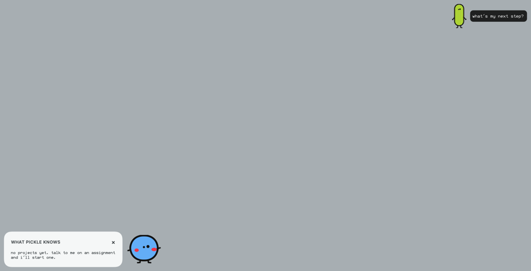
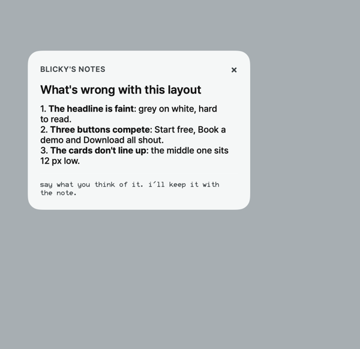
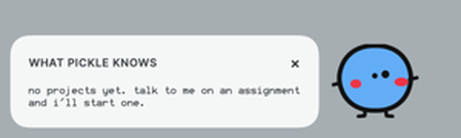
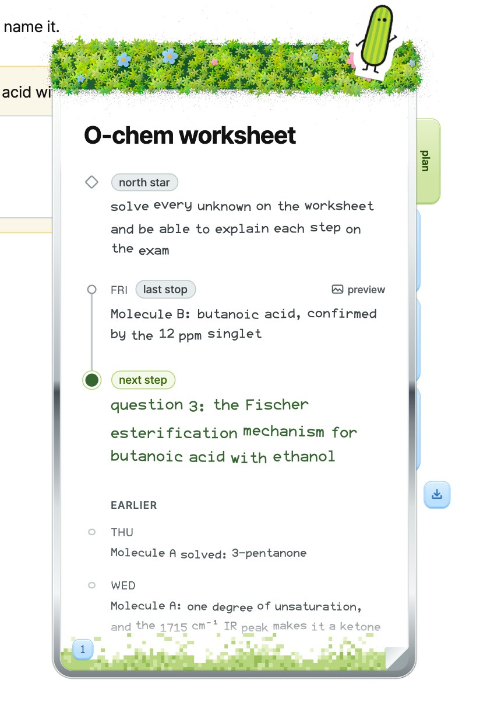
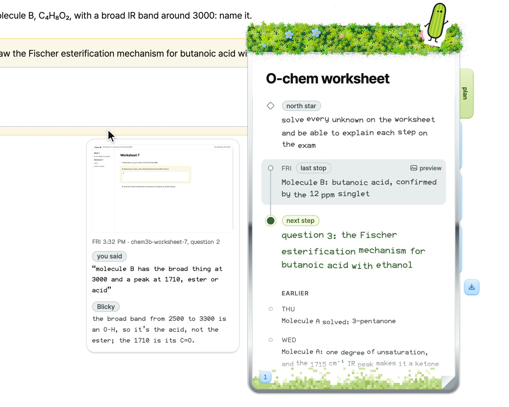
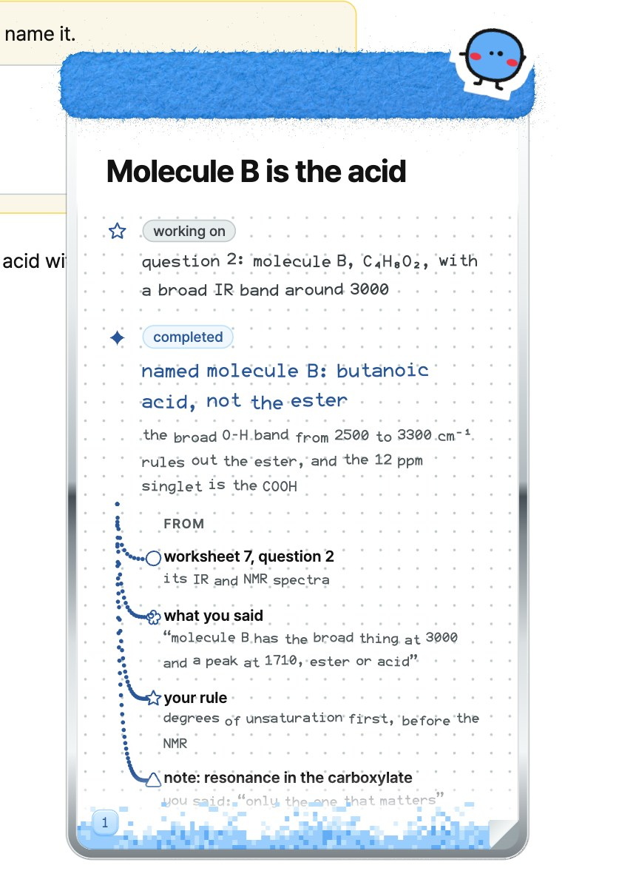
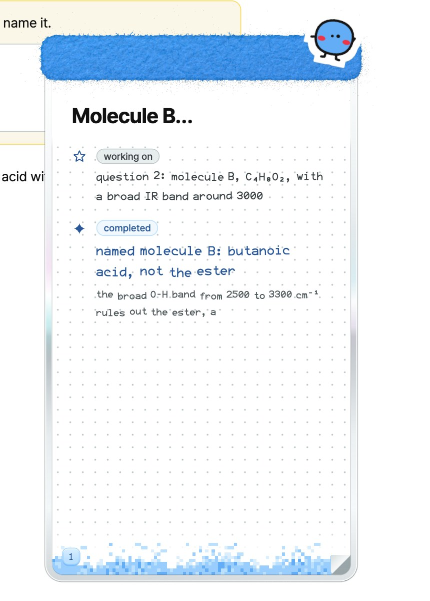

Where the front end is,
and what the notepads change
A read of the Mac shell (app/shell), its tokens, and every path live data takes to the screen, then the plan for putting the two final notepads in. Nothing in app/ is changed yet. This page is for checking we agree before any code moves. Every claim points at file:line from the three reads.
His ask
Today: what the shell draws
One click-through overlay per screen (Overlay.swift:9-51) holds Pickle, Blicky and the marks; cards and windows are separate floating panels. SwiftUI and Core Animation, no web views.
Pickle + his panel
Pickle (60 pt, Core Animation) and a dark panel beside him: "listening", his words, Droid's step lines, and a pinnedname → next.Blicky, bubble, marks
Blicky (46 pt, SwiftUI Canvas), his one-line caption bubble, and 11 kinds of ink marks drawn over the screen.Context card → Pickle's notepad
"What Pickle knows": project, route chip, trust line, North star / Where it stopped / Next, 3 notes, sessions, other projects. Live from Convex.Notes window → Blicky's scratchpad
"Blicky's notes": a title, a markdown body, then his spoken reaction is kept with it.Past-frame card
The only screenshot shown back: a crop of an earlier frame beside Pickle, deleted after 30 s.Stamp, pins, onboarding cards
Moss-ring stamp + undo pill, pins on circles, the onboarding intro card, the circle echo box, and the menu.

Tokens: how it standardizes today
One tunable pipeline, but no system under it: values are per component, not per role, and the file on disk is behind the code.
Tokens.swift:569-587). This is what actually runs.:622-667).DialServer.swift:26-63).Brand.swift:10-30). No Geist Pixel Square.How standardized it really is
- About 300 per-component literals and no role layer:
#63ADF7repeated in 8 keys,#121212in about 10. - The new cards hardcode every type size (10–17), tracking and spacing:
ContextCard.swift:221-339,NotesWindow.swift:85-106. - Motion is per surface: outBack 1.70158 in the panel, easeOut 0.15 in the stamp, 45 ms per caption character.
- A real bug: the card measures its label in the system font and draws it in Pretendard (
BlickyDirector.swift:685vsBlickyView.swift:134). - Old web pages in
app/still carry retired names:--sky-deep #3D9DC3, a beige--paper #EFEBE1.
What I'll replace
- One source:
design/tools/tokens.mjsalso writes the shell's tokens (roles, the type scale, motion ms), so Swift and the notepads read the same numbers. - A role layer in Tokens.swift (ink, text-secondary, text-muted, text-on-dark, surface-page, line-hair, blicky-ink, pickle-ink, attention, checked), and the cards and panel read roles, not hex.
- Fix the drift in the table below; dials keep working, now on roles.
- Fonts: add Geist Pixel Square (counts, page numbers) to
app/shell/fonts.
Drift against the design system
| Shell today | Design system | Where |
|---|---|---|
Pencil lead / box stroke #3D9DC3 | not on the sky ramp; Blicky's writing is blicky-ink sky-700 #295798 | Tokens.swift:173 |
Pencil wood #E9CDA4, eraser #F29BA4 | beige is banned; petal-300 #FEABCA, silver-400 | tokens.mjs:18 |
Highlight #FFD84D | attention pollen-300 #F7C933 | Marks.swift:1392 |
Panel #141414, text #FFFFFF | night #161513, text-on-dark #F5F7F7 | Overlay.swift |
Card label grey #6B6B6B | text-muted #515A5D (no light grey text) | ContextCard.swift |
| Radii 12 / 6 / 10 / 3 / 6 | scale 2, 4, 8, 12, 18, 28, 36; card 18 | Tokens.swift |
| Card shadow: blur 14 at 0.22 | grain elevation, never blur | BlickyView.swift:122 |
| Type 12, 14, 15, 22; tracking in points | 11, 13, 16, 20, 25; tracking in em | ContextCard / NotesWindow |
| Blink every 4.2 s for 140 ms | blinkEvery 6000, blink 90 | PickleLife.swift |
| Caption 45 ms a character; fades 500, vanish 300, pop 160 | dot 40; gentle 420, base 280; hitStop 90, drain 80 unused | Tokens.swift |
Already matching: onboarding plane #F5F7F7, cheek #EE3445, Blicky body sky-400 #63ADF7, pencil pollen-300, card radius 18 / pad 24, quick 180, swap 220, scene 900.
Live data: what reaches the screen, and how
The shell has no Convex client: everything comes through the talk server as plain HTTP with NDJSON lines (TalkStream.swift:86-103). Pick a notepad to see the paths it would read.
projects.ts:130-149, 591).turn.ts:119+).sessions/<id>.jsonl: his words, the frame id, every line and command (sessions.ts:455-467).references/ and Convex storage (projects.ts:504-556).notes:bySlug, memlog:bySlug in Convex; his reactions to notes.machine.ts:222-225).card:now subscription, pushed as card{…} lines (live.ts:55-107).screen, say, audio, do, words, trust, done and more (turn.ts:139-338).references:bySlug, notes:bySlug, sessions:bySlug; /watch fields sent but unread: step, notes[].body, projects[].screen.CardSnapshot; shows north star / where it stopped / next (LiveCard.swift:96-190).cmd; says go to the bubble; ignores route, recall, bring_back, session, replay… (Talk.swift:391-504).notes command (:901-909).project cmd carries north_star and where_it_stopped; only name → next is shown (:892-898).turn.ts:155-160); the peek needs a kept crop. Your call below.What changes, surface by surface
Two surfaces are replaced by the two finals, fed by data the server already has. The rest stay and move onto the token roles.
1 · Context card → Pickle's notepad
The same trigger, a click on Blicky (AppController.swift:114-121). The pad rises; Pickle leaves the cursor and lands on it as the sticker; then it writes.
| Today (CardSnapshot) | In the notepad |
|---|---|
northStar | north star, at the top |
whereItStopped | last stop, with "preview" on hover |
next | next step, the one green thing |
sessions[] | earlier stops, further down the scroll |
projects[] ("→ next") | a blue tab per project; hover shows its next step; click opens it |
| route chip, trust line, LIVE | kept, small, in Geist Pixel along the bottom edge |
| Reset / Clear screen | kept, two small buttons under the pad |
| new the moment | the stop's crop, what you said and the reply: a new peek on /watch, from the session file and the kept crop |



2 · Notes window → Blicky's scratchpad
On the notes command and at a "completed" moment in a teaching turn (the final molecule, the three-step summary). Blicky flies onto it; the border goes to glass while it writes, back to metal when it's done.
| From | In the scratchpad |
|---|---|
| the turn's question / circled region | working on |
notes cmd title + the decision line | completed + its context |
screen{frame_id, app, window} | source: the screen it was on |
| his words (the turn text) | source: what you said |
| memlog / decisions | source: your rule |
notes:bySlug + his reaction | source: a note, and what you said about it |
| panel / label / structure marks parked by "Wait for my pad" | the sketches, drawn in the pad instead of over the page |
project next | up next |


3 · Pickle's panel
Stays at the cursor, onsurface-night and text-on-dark. It keeps "listening", his words and Droid's lines; the pinned name → next moves into the notepad.4 · Past-frame card
Its crop pipeline (card.mjs, turn.ts:365-388) becomes the picture in the last-stop preview.5 · Bubble, marks, stamp
Same drawing, read from roles: Blicky's ink sky-700, highlight pollen-300, no beige, no blur shadows.How the notepads get into a native app
The finals are React with WebGL materials (felt, moss, metal); the shell is SwiftUI. Two ways in; the first is my recommendation.
A · The finals as they are, in a web view
- A
NotepadPanel.swift: a floating, transparent NSPanel with a WKWebView, one per pad. - It loads a built bundle of the two finals (a
notepadentry indesign/, built intoapp/shell/notepad/, offline). - The shell already holds the data: it passes each
card{…}line and turn event in through one call,window.pickje.update(json). - Pickle's flight stays native (he's already drawn at the cursor); the pad tells Swift where its sticker is, so he lands on it.
- Pros: it looks exactly like what you signed off, today. Cons: a web view's memory, and two worlds to keep in step.
B · Port the finals to SwiftUI
- Rebuild both pads in SwiftUI; bake the felt, moss and metal into images from the design system's own renderer.
- Pros: one world, native text and scrolling. Cons: days of work before the deadline, and every detail you tuned has to be redone by eye.
Where they show up in the demo
The beats as the specs and code have them today (bin/pickje --live, the o-chem worksheet). Green outline: Pickle's notepad; blue: Blicky's scratchpad. Click a beat.
Order of work, once you say go
Tokens, one source
tokens.mjs writes the shell's roles; Tokens.swift gets the role layer; the drift rows fixed; Geist Pixel Square added. Dials keep working.The notepad bundle
Anotepad build of the two finals that takes update(json), with the staged projects as its offline fixture.NotepadPanel.swift
The web-view panel; opens on Blicky's click (Pickle's) and onnotes / completed (Blicky's); Pickle and Blicky fly onto it./watch carries the moment
Apeek per project (crop, his words, the reply) and the fields already sent (step, notes bodies); the project pin keeps all its fields.Turn events into the scratchpad
Talk.swift forwardsnotes, parked marks, screen, route, session to Blicky's pad; the glint runs while lines are streaming.Check it live
The whole demo run on--live with the staged projects, then on a real session; screenshots of each beat for you.Another session is working in app/ right now (it committed 617ac66 after the design commit). The shell changes go in small commits that touch only these files, and I'll check its tree before each.
Your calls
- 1: port to SwiftUI, as close as possible (B, not the web view).
- 2: yes, keep a crop for each last stop.
- 3: on screen by default; into the pad when there isn't room; when the screen gets too cluttered a diagram moves into the pad and is saved.
- 4: yes, tokens.mjs is the one source for the shell.
The handoff prompt with all of it: docs/frontend-plan/HANDOFF-PROMPT.md · the art: docs/frontend-plan/art/